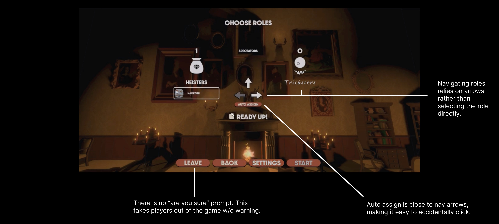

What is Haunted Heist?
Haunted Heist is a round-based PvP horror party game. Heisters race to collect gems in a procedurally generated mansion while Tricksters use abilities to scare them off and derail the run. Haunted Heist has 50,000+ wishlists on Steam ahead of launch.
Challenge
With an open scope, Autotroph commissioned a UX audit.
Game developers typically concentrate their playtesting efforts on core systems that draw immediate player feedback, such as combat mechanics and movement dynamics. Settings and the lobby are used by every player and tested by almost no one. At launch, those screens matter more than they look. A wishlist isn't a player yet. Steam refunds any game played for under two hours, so a new player's first session, much of it affected by menus and navigation experience, decides whether the game stays in their library.
I prioritized evaluating those areas during the audit.
Solution
| What I found | What I designed |
|---|---|
| Each settings tab used inconsistent typography and structural hierarchy, forcing players to re-orient themselves every time they navigated to a different tab. | One structure across all four tabs, grouped by what a player is looking for. |
| Players changed roles by clicking through arrows, which was slow and took up space in a crowded lobby menu. | A new interaction model for the pre-game experience. |
Final screens will be shared post-launch.
Impact
The settings menu shipped on my information architecture, with Autotroph applying the final visual styling. Drag-and-drop role selection shipped after we combined my interaction model with the head-to-head layout Autotroph wanted to keep.
Lobby Role Selection
Players changed roles by clicking arrows instead of choosing a role directly. It slowed down the experience, and the arrows took up space the lobby needed to look less busy.

What I proposed: The arrows are gone. Every role is visible, and a player drags their character onto the one they want.
Where it landed: Autotroph liked the interaction but pushed back on the layout. Mine had dropped the head-to-head symmetry of the opposing teams. That visual layout was crucial for them. So, we combined the two: their head-to-head layout, my drag-and-drop interaction. That version is in the build.
Reflection
Stepping into the gaming space and contributing to Haunted Heist has been such an incredible journey. Working with the small, passionate indie team at Autotroph showed me how thoughtful, user-centered design can elevate player experience. Working closely with a small studio meant every suggestion mattered, and seeing those ideas being taken into consideration and making it into the final build was extraordinarily rewarding. There is still more to come after launch on October 12, including final screens and further lobby development. Can't wait to share! :)